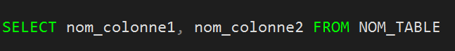

Transact-SQl
SQL
SQL (sigle de Structured Query Language, en français langage de requête structurée) est un langage informatique normalisé servant à exploiter des bases de données relationnelles. La partie langage de manipulation des données de SQL permet de rechercher, d'ajouter, de modifier ou de supprimer des données dans les bases de données relationnelles.
CRUD
CRUD (create, read, update, delete) (créer, lire, mettre à jour, supprimer) est un acronyme pour les façons dont on peut fonctionner sur des données stockées. C'est un moyen mnémotechnique pour les quatre fonctions de base du stockage persistant.
SELECT
SELECT (READ) est la commande qui permet d'afficher des données dans une base de données.
CREATE
CREATE est la commande qui permet d'afficher des données dans une base de données.